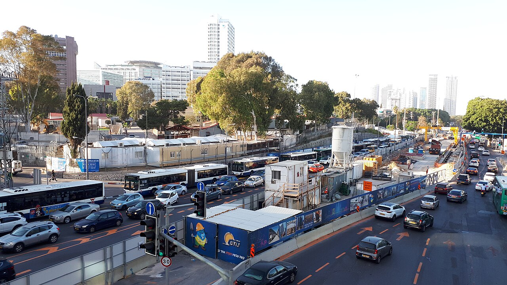
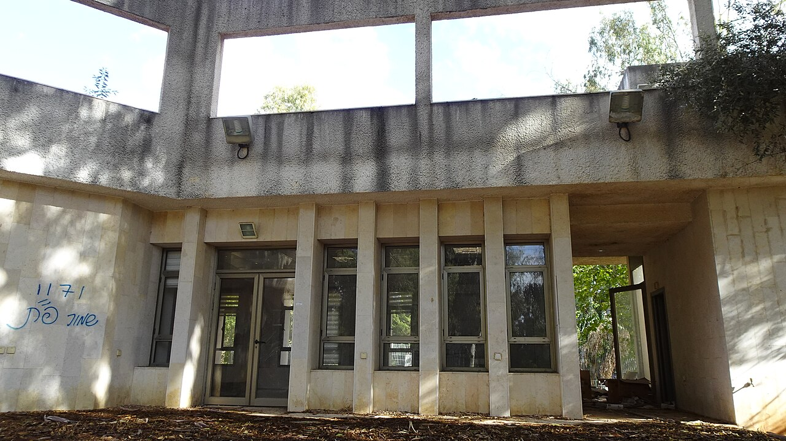
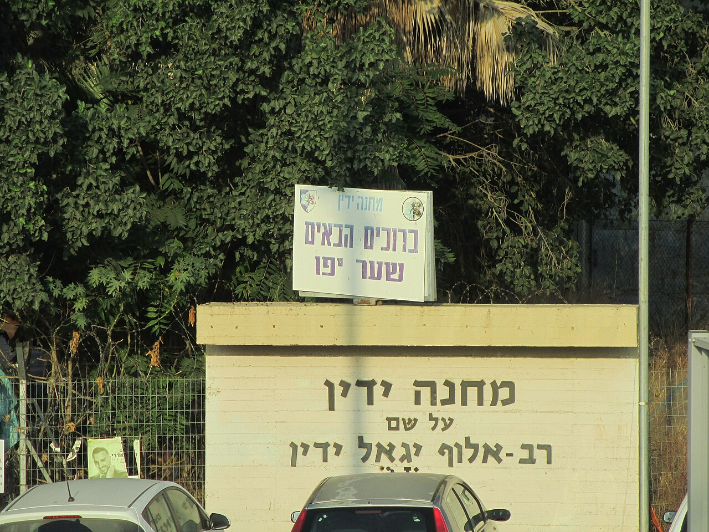
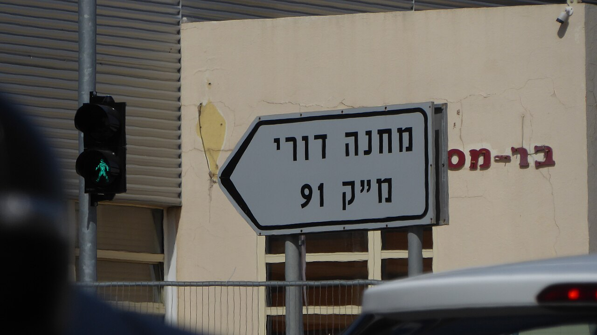
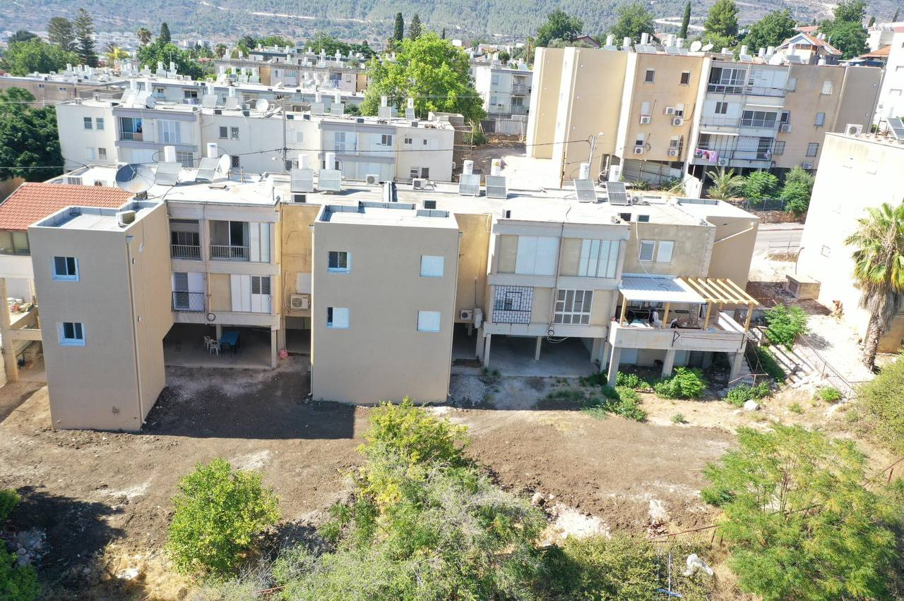

📐
תכנון
הובלת תהליכי תכנון מרחבי וקידום הליכים סטטוטוריים עבור מחנות ושטחי מערכת הביטחון.
מובילים את ניהול נכסי מערכת הביטחון וצה"ל, את תכנון המרחב, ואת העתקת מחנות צה"ל מהמרכז לפריפריה – לטובת הביטחון ולטובת המדינה.
החטיבות שלנו צור קשריחידת מתוו"ה הוקמה ביולי 2012 במסגרת אגף מבצעים לוגיסטיים ונכסים במשרד הביטחון.
היחידה אחראית על ניהול כלל נכסי מערכת הביטחון וצה"ל, על הובלת תהליכי תכנון מרחבי וקידום הליכים סטטוטוריים, על הסדרת המיסוי המוניציפלי מול הרשויות המקומיות, ועל קידום פרויקטים בתחומי הגנת הסביבה, מים, אנרגיה ותברואה.
בנוסף, מובילה היחידה את שיווק והעתקת מחנות צה"ל ממרכז הארץ לפריפריה – מהלך המשחרר קרקעות לשימוש אזרחי ומאפשר הקמת פרויקטים חדשים.

היחידה פועלת באמצעות חטיבות מקצועיות, שכל אחת מהן אחראית על תחום ליבה בניהול המרחב והנכסים של מערכת הביטחון.
הובלת תהליכי תכנון מרחבי וקידום הליכים סטטוטוריים עבור מחנות ושטחי מערכת הביטחון.
שיווק והעתקת מחנות צה"ל מהמרכז לפריפריה, שחרור קרקעות לאזרחות והקמת פרויקטים חדשים.
ניהול כלל נכסי מערכת הביטחון וצה"ל – רישום, הסדרה וניהול שוטף של המקרקעין.
הסדרת ארנונה והיטלים מול הרשויות המקומיות ברחבי הארץ.
קידום פרויקטים סביבתיים ושמירה על איכות הסביבה במחנות ובשטחי מערכת הביטחון.
קידום פרויקטים בתחומי מים, אנרגיה ותברואה עבור צה"ל ומערכת הביטחון.
היחידה מובילה את פינוי מחנות צה"ל ממרכז הארץ, ביניהם מחנות מרכזיים כמו סירקין, צריפין ותל השומר, והעתקתם למחנות חדשים ומתקדמים בפריפריה.

פתח תקווה

שפלת יהודה

רמת גן
